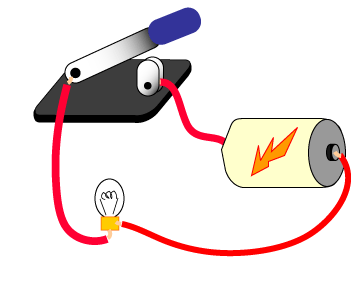

Antwort:
- Ein Ein/Ausschalter.

Ein Ein/Ausschalter ist einfach und leicht zu bauen. Er bewegt ein Metallstück und schließt oder öffnet so den Stromkreis. (Die Abbildung rechts demonstriert die Funktionsweise eines Ein/Ausschalters, klicken Sie dazu mit der Maus auf die Grafik.)
Ein Lichtdimmer muss stufenweise und übergangslos den Strom ändern, der ein Licht erreicht. Er besitzt mehr Komponenten als ein Ein/Ausschalter und muss sorgfältig zusammengesetzt werden. Ein präziser Dimmer (bei dem 25% exakt 25% bedeuten) ist noch schwieriger zu bauen.
Das gleiche trifft auf die winzigen Einheiten innerhalb eines Siliziumchips zu. Ein/Ausschalter sind relativ leicht herzustellen. Leicht herzustellen bedeutet, dass die Geräte billig, klein und zuverlässig sind und, dass Millionen von ihnen auf kleinem Raum untergebracht werden können.